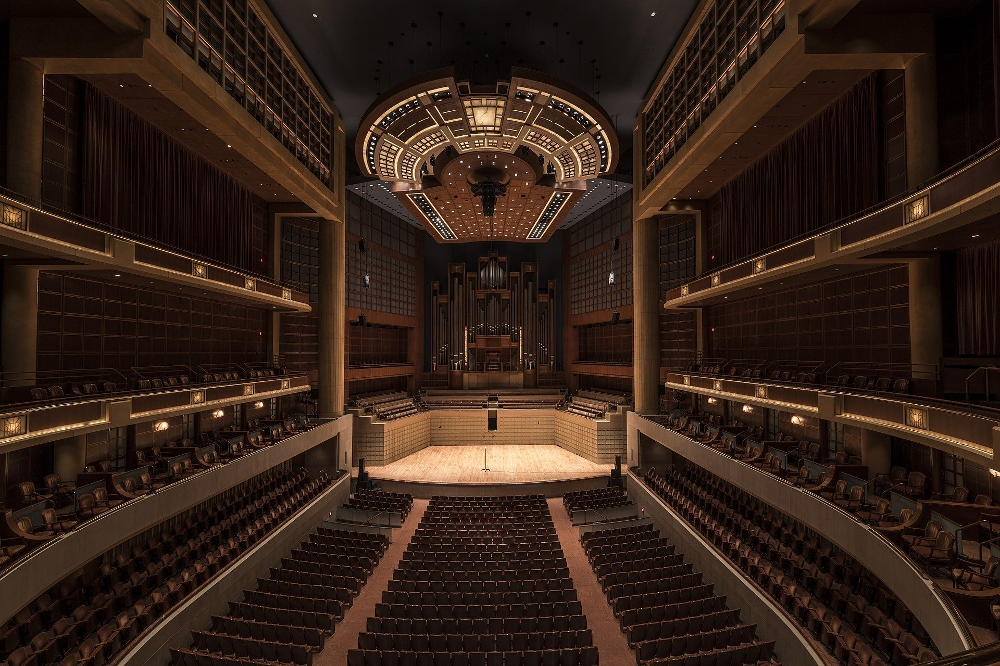

大阪城ホール
大阪城築城400年を記念してつくられた、最大16,000人収容の多目的アリーナ。スポーツ競技やコンサートが行われる。館内レストランから眺める4月の大川の桜も見事だ。

営業時間
9:00～21:00 ただし、時間外利用も可能
休日
無し
緑に包まれた大阪城公園内、天守閣の北東約500mに位置し、16,000人収容可能なアリーナホールと、500人収容の体育館スタイルのサブホールからなる、西日本最大規模のホール。1983年の「大阪築城400年を記念」してつくられ、コンサート、スポーツ、展示会、式典、コンベンションなどさまざまなイベントに合わせたステージが設営できることが最大の特徴だ。隣接する建物には、各種研修会、セミナー、面接会場、懇談会、テスト会場などに使用できる広さ約159平方メートルのコンベンションホールや、展示会スペースとして利用できる広さ約827平方メートルの城見ホール、そのほか会議室もある。館内レストランはホテルニューオータニ大阪直営のもので、4月上旬ごろになると、ここから窓越しに見事な大川の桜を眺めることができる。
住所
〒 540-0002 大阪市中央区大阪城3-1
アクセス
JR大阪環状線「大阪城公園駅」より徒歩5分
電話番号
06-6941-0345